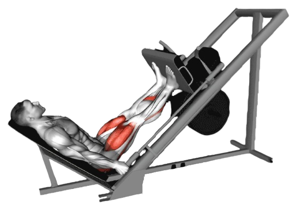
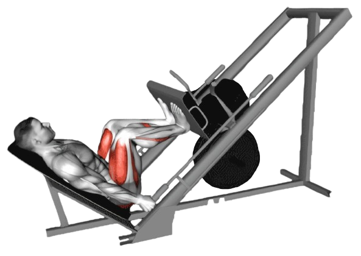

파워 레그프레스

- 발을 발판 위에 올렸을 때, 발의 위치는 어깨 너비로 두고 발끝은 약간 바깥쪽을 향하게 둔다.
- 발판을 들어 올린다. 무릎은 완전히 펴지 말고 약간 구부린 상태로 남겨둔다.
- 이때 호흡은 뱉는다.
- 천천히 발판을 내린다. 발판을 내릴 때 무릎이 90도 정도 구부러질 때까지 천천히 내려간다.
- 이때 호흡은 마신다.

주의사항
- 운동의 속도를 일정하게 유지한다. 너무 빠른 동작은 부상의 위험이 있다.
- 다리를 올릴때 반동을 주지 않는다.
- 무리하면 부상위험이 있기 때문제 처음에는 가벼운 중량부터 시작한다.
운동부위 및 효과
- 대퇴사두근, 대둔근, 햄스트링, 종아리 근육
- 전반적인 다리 근력을 증가시킨다
- 무릎과 엉덩이 관절의 안정성을 높여 부상 예방에 도움이 된다